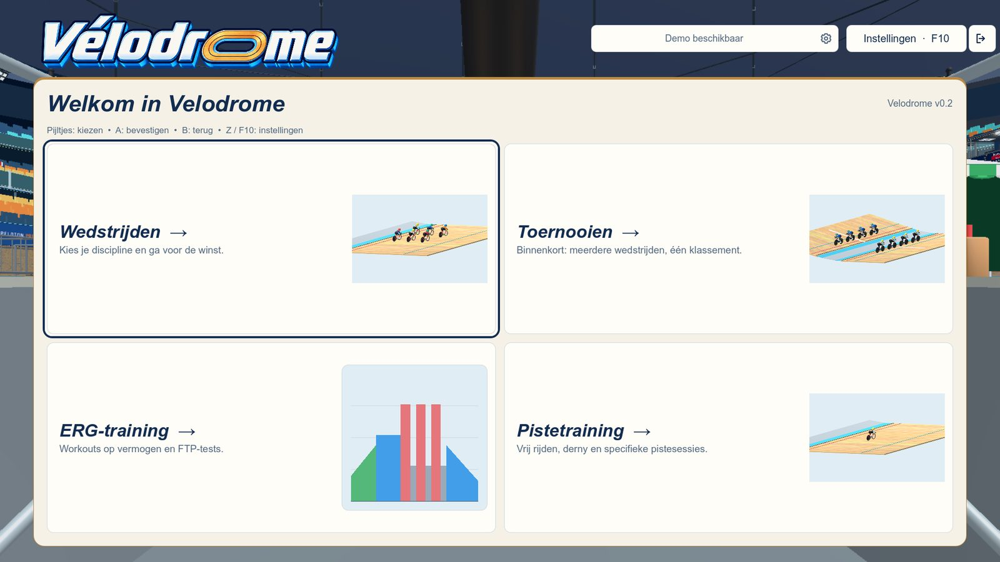

Handleiding
Installeren, bedienen en je trainer koppelen.
Installatie op Windows
- Download een versie via de downloadpagina.
- Pak het zip-bestand volledig uit naar een map waarin je mag schrijven. Houd alle bestanden bij elkaar.
- All-in-one: start
Velodrome.exe. Die start de bridge en het spel samen, en stopt de bridge als je het spel sluit. StartVelodromeGame.exeniet rechtstreeks. - Alleen het spel: start
Start-Velodrome.cmd. Bij de eerste start worden de instellingen aangemaakt, met 24 fictieve renners.
Installatie op macOS
- Kies op de downloadpagina de versie voor Apple Silicon (arm64) of Intel (x86_64). Gebruik macOS Monterey 12.3 of nieuwer.
- Pak de volledige bundel uit en lees
START-HIER.txtvoor de eerste start. Houd alle bestanden in dezelfde map. - Open
Start-Velodrome.command. Laat het Terminalvenster open terwijl je speelt en geef Bluetooth-toegang wanneer macOS daarom vraagt.
Bediening met het toetsenbord
Dit zijn de standaardtoetsen tijdens een wedstrijd. Je kunt ze aanpassen in de instellingen (F10).
| Toets | Actie |
|---|---|
| A / D | Sturen |
| ↑ / ↓ | Zonder trainer: vermogen +/− 25 W. Met trainer: virtueel schakelen |
| + / − | Vermogen omhoog of omlaag |
| C / Q | Volgende of vorige camera |
| B | Achteruitkijken |
| V | Rennersinfo |
| R | Opnieuw starten |
| Esc | Pauzemenu |
| F10 | Instellingen |
Zonder trainer gebruikt het spel een energiemodel om je vermogen te simuleren. Dat is geen echte vermogensmeting.

Trainer en controller koppelen
Het spel praat met je hardware via een aparte bridge. In de all-in-one-versie start die vanzelf. Draai je alleen het spel of werk je vanuit de broncode, dan start je de bridge zelf.
- Sluit andere apps die je trainer, controller of ANT+-stick gebruiken, zoals Zwift of Garmin Express.
- Zet bij Zwift Ride eerst de linker controller aan, daarna de rechter. Zet je trainer aan.
- Voor hartslag: steek de ANT+-stick in en zet Broadcast Heart Rate aan op je Garmin.
- Vanuit de broncode: start
bridge/start_windows.bat(Python 3.12, internet nodig bij de eerste start). Zonder hartslagstick:start_windows.bat --no-ant. - Start het spel. De bridge blijft zoeken tot je apparaten beschikbaar zijn en verbindt opnieuw als de verbinding wegvalt.
Voel je onverwachte weerstand, stop dan met trappen. Als het spel of de verbinding wegvalt, kan de software niet garanderen dat je trainer de weerstand loslaat.
Compatibiliteit
Ondersteund in de code. Dat is geen garantie voor elk toestel of elke firmwareversie.
| Wahoo KICKR / KICKR CORE | Bluetooth FTMS: vermogen, snelheid en cadans; SIM, ERG en hellingsimulatie. Andere FTMS-trainers zijn niet bevestigd. |
|---|---|
| Zwift Ride | Bluetooth via de linker controller: 12 virtuele versnellingen, knoppen en analoge stuurpaddles. Knoppen in te stellen via Instellingen → Controller. |
| Garmin-hartslag (ANT+) | Via een ANT+-USB-stick. Zet Broadcast Heart Rate aan op je horloge, bijvoorbeeld een vívoactive 5. |
De ERG-modus werkt tussen 0 en 1300 W, binnen wat je trainer zelf aangeeft. De virtuele versnellingen zijn een benadering en gebruiken geen eigen protocol van Wahoo of Zwift.
Instellingen en gegevens
Behoud de renner-ID’s als je namen wijzigt, zodat je records gekoppeld blijven. Je records en opgeslagen ritten staan in je gebruikersmap.
Windows
%APPDATA%\Godot\app_userdata\Velodrome 250 - Sprint Beta\macOS
~/Library/Application Support/Godot/app_userdata/Velodrome 250 - Sprint Beta/Kies op tragere computers F10 → Beeld → Eenvoudige graphics. Die stand gebruikt minder publiek en een kortere intro, en wordt actief na een herstart.
Strava instellen
Voor rechtstreeks uploaden heb je een eigen Strava-app nodig. Strava vereist een abonnement om die app aan te maken. Open de Strava API-instellingen.
- Vul de Client ID en Client Secret van je eigen Strava-app in
strava_config.cfgin. Op Windows staat dat bestand inconfig/naast het spel. Op macOS staat het inconfig/in de gebruikersmap hierboven. - Gebruik
localhostals callbackdomein enhttp://localhostals redirect-URL. Geef Vélodrome bij je eerste upload in de browser toestemming om activiteiten te uploaden. - Kopieer de volledige localhost-URL uit de adresbalk en plak die in het koppelvenster van Vélodrome. Kies Koppel en upload.